Hai-Tao Li
Ph.D. candidate ? BIOINFORMATICS
OnTAD: hierarchical domain structure reveals the divergence of activity among TADs and boundaries
摘要：细胞核中染色质的空间组织与调节基因表达密切相关。染色质不同片段之间的高频相互作用图谱揭示了拓扑关联域（TAD）的结构，大多数的调节相互作用在TAD中发生。TAD不是同质的（homogeneous）结构单元，而是其组织似乎呈现层次结构的特征。这里作者介绍一种称为OnTAD的算法，这是一种优化的从Hi-C数据中识别嵌套TAD的方法，其功能用于标识分层的TAD结构。OnTAD用新的生物学视角，揭示了不同的TAD水平的作用，基因调控中的边界的作用，环挤出模型和间隔域的性质。
基于Hi-C数据识别的一些高度相互作用的染色质区域称为“拓扑关联域”（TAD）。TAD是一种是染色质亚结构。通过研究发现，TAD区域在不同的细胞类型，乃至不同的物种之间较为保守。根据研究，TAD已被广泛认为是许多基因调节相互作用发生的基本结构单元。随着研究的深入，TAD具有的层级结构，然而传统的TAD识别算法无法较好的识别这种嵌套结构，因此本论文作者开发了OnTAD算法，一方面与传统方法作比较，证明OnTAD算法在识别嵌套TAD与传统的算法（DomainCaller,TopDom,rGMAP, Arrowhead以及TADtree）相比所具有优势；另一方面，作者通过计算出的TAD嵌套结构，证明该结构中的生物学性质。
一、算法介绍
OnTAD采用Hi-C接触矩阵作为输入数据，并分两步识别出不同层次的TAD结构。第一步，OnTAD使用自适应局部最小搜索算法识别候选TAD的边界。具体来说，改算法使用一个边长为W的窗口沿着对角线进行扫描（如图1a所示），计算每个窗口内的平均接触频率。平均接触频率达到显著局部最小值（1.96的标准偏差小于局部最大值）的位置被标识为候选TAD边界。由于具体TAD的大小是未知的，因此窗口的边长W是可以变化的，W是由TAD的大小以及Hi-C数据的分辨率两方面决定的。比如，Hi-C的分辨率为10Kb，TAD的大小为20Mb，因此K=20Mb/10Kb=200。在论文中，作者取K从1到200分别进行了实验（图1b）。
在第二步中，OnTAD通过使用动态编程算法有选择性地连接成对的候选边界，用来组成TAD结构（图1c）。为了在一对边界之间形成TAD，OnTAD要求边界之间的潜在TAD区域内的平均接触频率要比TAD外部的周围区域（根据用户定义的变量（λ））的平均接触频率要高；否则，边界之间不会形成TAD。基于动态规划算法递归地确定基因组的最佳分区，用于根据得分函数在每个标识的TAD中产生最大且最右边的subTAD结构。根据得分函数递归地确定基因组的最佳分区，以在每个已鉴定的TAD中产生最大的最右边的subTAD。在递归过程的最后，获得使得分函数最大化的优化结果，从而产生基于Hi-C接触矩阵最可能形成的分层TAD组织（图1d）。所标识的TAD的位置以纯文本文件和bedgraph文件的形式提供给用户，可以在基因组浏览器上查看。
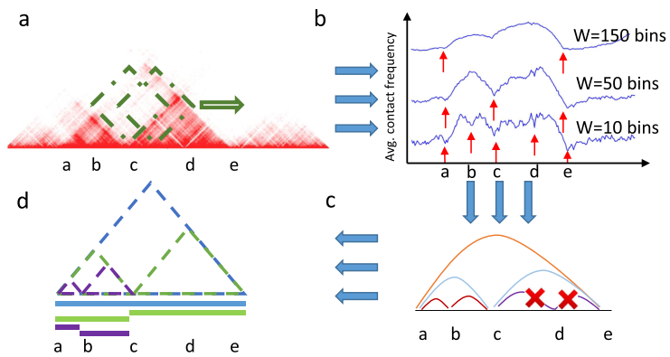
图1 OnTAD算法流程
二、与其他算法进行比较
作者认为，在任何给定的基因组距离上，Hi-C信号之间的差异都应通过TAD的分类来很大程度上解释。因此仿照线性回归的决定系数（R2），构建了一种RTAD，用该系数度量TAD对Hi-C信号之间的变异程度的解释。如果识别的TAD能够解释更多的Hi-C信号的变异程度，则表明识别的TAD更具有意义。
作者将OnTAD算法与已经发表的五种识别TAD的算法进行了比较，其中不能识别层次TAD的算法——DomainCaller,TopDom，识别层次TAD的算法rGMAP, Arrowhead以及TADtree。作者通过对比五种算法的TAD决定系数以及TAD的生物学意义，证明OnTAD的算法的优势。实验所使用的数据为GM12878.
首先，作者对比了五种算法TAD决定系数的不同，如下图所示
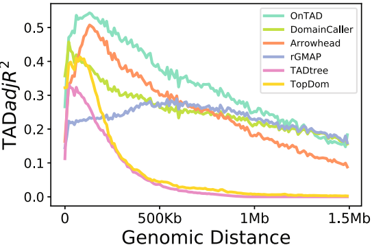
可以看出，OnTAD在0-1Mb之间的TAD决定系数要显著比其他算法要高。
然后，作者对比了六种算法之间TAD边界上富集的一些重要转录因子（TF）的信号强度，如下图所示
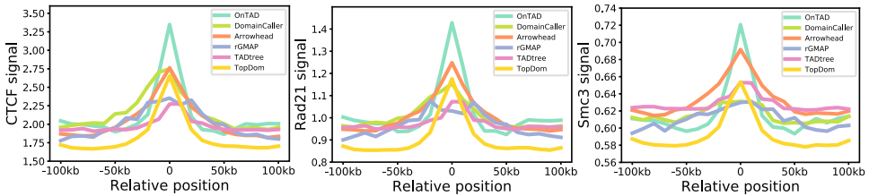
可以看出，OnTAD识别的TAD boundary处富集大量的CTCF，Rad21以及Smc3等信号，比其他几种算法的富集更为显著，说明的TAD识别更具有生物学意义。
第三，作者对比了几种算法在不同的Hi-C分辨率下得到的结果是否具有一致性，使用的度量为Jaccard Index,通过实验可以看出，在5Kb和10Kb中，结果略逊于Arrowhead算法，但是在10kb和25kb则是所有算法中最优的。证明了算法的稳定性。且执行的结果的可重复性较高。
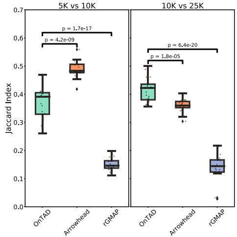
三、不同层次的TAD生物学性质上的不同
作者通过识别出的TAD层次，发现TAD的层级不同，其基因活性和表观基因组状态有所不同；TAD boundary的层次不同，共享的TAD边界不对称并且比其他边界更活跃。
作者首先对TAD的层次以及TAD边界层次的level进行了定义。如下图所示，关于TAD层级，最外层都定义为level 1，其直接的子TAD定义为level 2，再往里一层为level 3，以此类推。而对于TAD边界的层次定义，则以在TAD的任意一边最大的TAD数值，作为其level值。
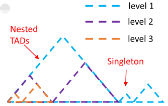
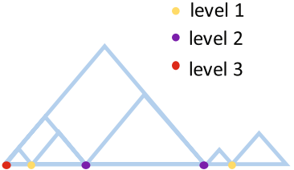
作者使用GM12878作为实验对象进行研究，发现在基因组的75.7%都在TAD范围中，在这些TAD范围的基因组区域，绝大多数（92.2%）都存在多个TAD层级。
首先比较不同的TAD边界中转录因子CTCF的富集程度，如下图所示，可以看到，嵌套TAD的边界富集有更为显著的CTCF峰，而对于只有一个TAD的边界（singletons），CTCF的富集并不显著，shared是指所有的TAD边界，虽然也有显著的富集，但是不如多层级TAD富集明显。
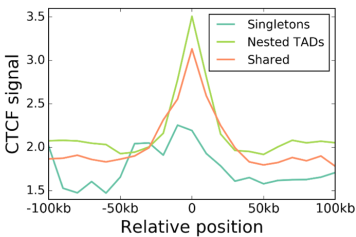
而分层TAD与活跃的表观遗传状态有更强的关联，如下图所示，在不同水平的TADs覆盖的区域所富集的表观遗传状态（根据IDEAS进行划分）。随着TAD含量的增加，活性状态的富集（倍数变化）（在作图中以橙色标记）增加。在右图中显示了Tss，Enh和PromCtcf的状态的在不同层级的TAD的FC值。可以看出，层级越高的TAD中，活跃的表观遗传状态富集越为显著。
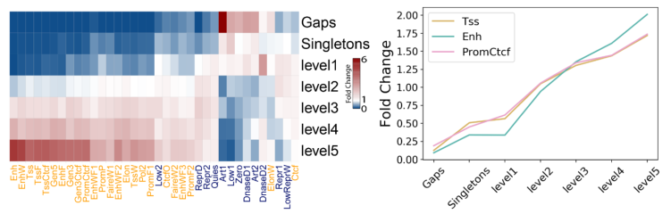
随后，作者以GM12878和K562中识别的层级TAD中的基因表达情况进行了研究，如下图所示，纵坐标为基因表达FPKM与TAD区域上的平均值。可以看出，TAD层级越高，其基因表达平均值越高。
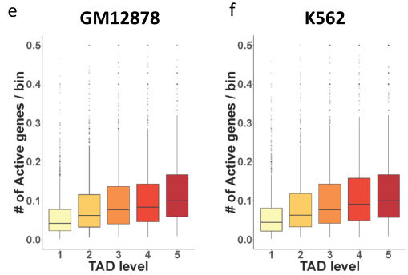
之后，作者对不同层级的boundary进行了研究。作者认为TAD boundary层级越高，所富集的活跃的表观遗传状态就越密集。Hub-boundary（也就是level=5的TAD boundary）富含活跃的表观遗传状态（以橙色标记），尤其是与Tss相关的状态（例如TssF，Tss和TssCtcf）。
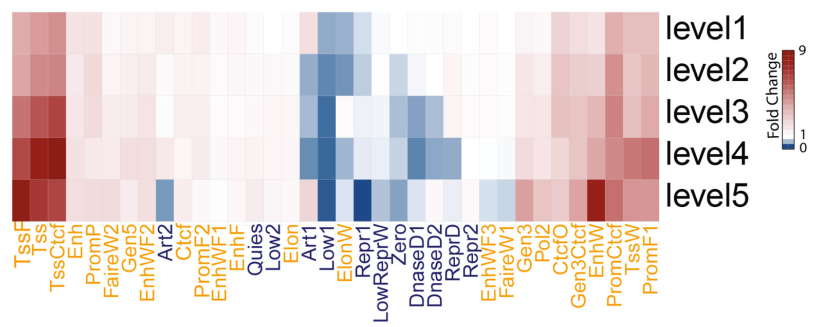
转录起始位点与TAD边界重叠的基因的基因表达水平分布。基因按照TAD边界的水平分类。结果如下图所示，也可以看出，在level更高的基因表达水平相应也更高。
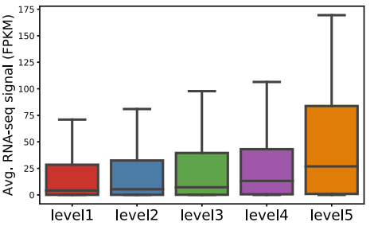
通过以上的实验，作者提出一种非对称环挤出模型（The asymmetric loop extrusion model），具体如下图所示，其中红色、橙色、紫色和蓝色表示不同层级的TAD boundary，层级数依次降低，在不同的层级都富含有转录因子CTCF，然后层级高的CTCF处较为稳定，而环的挤出是从层级较低的boundary进行滑动挤出的，因此该过程是不对称的。挤出的环结构在下一个CTCF处停止。
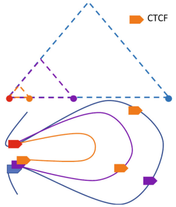
最后，作者对TAD所在区域的表观遗传特征进行了研究，以小鼠的G1E-ER4细胞系为例进行了实验。发现绝大多数TAD结构都在活跃区室（compartments）中分布。作者对TAD层级的形成，除了上述的环不对称挤出模型，还认为TAD之间的boundary与区室不同有关。如下图所示，在小鼠G1E-ER4细胞系中捕获的区域是chr19：11.3–12.2 Mb的情况。两个子TAD（橙色线）表现出独特的表观遗传学特征，一个富含抑制信号（H3K27me3）和沉默表达（低RNA-seq信号），另一个富含活性信号（H3K27ac，H3K4me3和H3K36me3）和活跃表达（高RNA-seq信号）。而这两个子TAD之间的共享边界（用虚线框标记）没有CTCF峰，表明这两个子TAD的形成可能不涉及环挤。
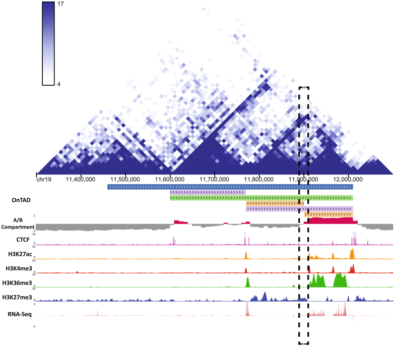